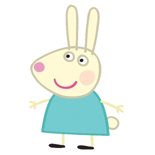

Accueil
Personnages
Histoire
Personnages Principaux
Tout d'abord, Peppa Pig, une adorable petite truie légèrement autoritaire.
Elle a 4 ans et vit avec la famille Pig.
Ce qu'elle adore par-dessus tout, c'est de sauter dans la boue, de rire et de pousser de bruyants grognements.
George est le petit frère de Peppa, il a 18 mois.
L'objet préféré de George est son jouet dinosaure.
Il le trimballe partout avec lui.
George ne peut pas encore parler, mais il sait très bien dire un mot : « Dinosaure ! »
Maman Pig aime sauter dans la boue presque autant que Peppa.
Elle travaille depuis la maison sur son ordinateur.
Elle sait bien se repérer avec les carte et elle connaît beaucoup de choses.
Papa Pig est quelqu'un d'enjoué qui rit tout le temps.
Il aime beaucoup les cookies et la tarte à la citrouille et Peppa se moque souvent de son gros bidon.
Papa Pig est parfois un peu grognon quand il oublie où il a mit ses lunettes.
Personnages Secondaires
Mamy Pig est la grand-mère de Georges et Peppa.
Mamy Pig sait préparer un délicieux gâteau au chocolat.
Elle adore nourrir ses poules avec Peppa et George.
Papy Pig est le grand-père de Georges et Peppa.
Papy Pig a la main verte avec les légumes.
Il adore voyager avec Peppa et George à bord de son bateau et de son petit train.
Zoë Zebra est la fille de M. Zebra, le facteur.
Elle aime aider son papa à livrer le courrier.
Ce qu'elle préfère le plus au monde, c'est son jouet singe.
Suzy Sheep est la meilleure amie de Peppa.
Elle aime jouer à l'infirmière.
Son jeu de cartes préféré est la bataille.
-----

Rebecca Rabbit est une amie de Peppa et la grande sœur de Richard Rabbit.
Elle vit dans un terrier et c'est la voisine de Molly Mole.
Rebecca adore les carottes, même si elle est parfois gênée de l'admettre !
Pedro Pony est un ami de garderie de Peppa et c'est le fils de M. Pony, l'opticien.
Pedro est assez maladroit et peut souvent être en retard.
Il adore prétendre être un cowboy et il sait jouer du ukulélé..
Gerald Giraffe est l'un des amis de garderie de Peppa.
Il est très grand et c'est le fils de M. Giraffe, qui travaille au zoo.
Freddy Fox est un ami de garderie de Peppa, son papa, M. Fox, possède une boutique.
Freddy possède un très bon odorat, ce qui explique pourquoi il est si fort à cache-cache !
Il veut être policier lorsqu'il sera grand.
-----
Emily Elephant est une amie de Peppa.
Emily aime jouer avec les cubes.
Son jeu préféré est le même que celui de Peppa, à savoir sauter dans la boue.
Danny Dog aime bien aider Papy Dog à réparer les voitures dans le garage.
Le jeu préféré de Danny est le football.
Candy Cat est très forte au jeu du chat.
Elle peut se faufiler discrètement, puis… bondir !
Lorsque Candy est heureuse, elle ronronne.
Molly Mole et Peppa se sont rencontrées à la garderie et sont tout de suite devenues amies.
Elle est très douée pour creuser des trous et elle vit sous terre, dans la même colline que Rebecca Rabbit.